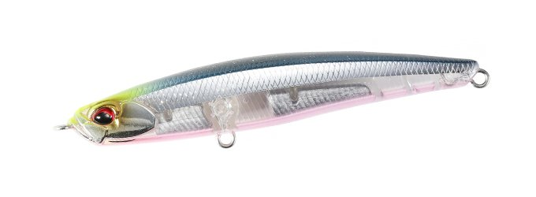
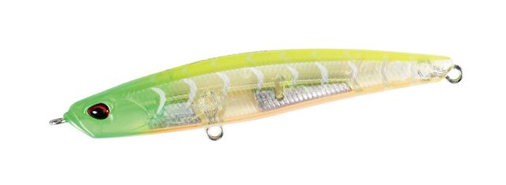
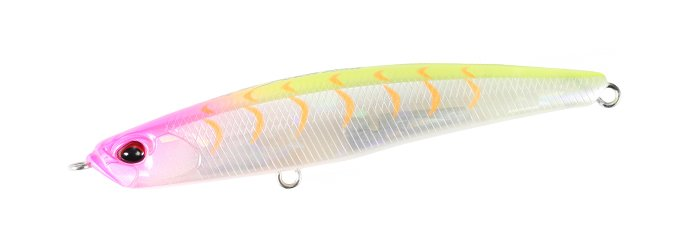
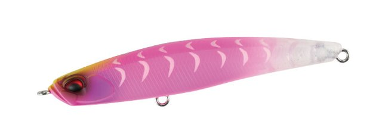

ベイルーフ シーク85HW
（Bay RUF Seek 85HW）
ベイルーフ シーク85HW（Bay RUF Seek 85HW）はDUO（デュオ）のシンキングペンシルです。
「シークスライド、飛距離武装。」。シークスライドをはじめ、喰わせ能力に特化したシークに誕生したヘビーウェイトモデルです。向かい風をものともしない飛距離で沖のポイントも射程内に入り、浮き上がりを抑えたことで、荒天下や急流エリアでも広い範囲を立体的に攻略できるのが最大の魅力です。

画像出典:DUO公式HP
スペック
- メーカー
- DUO（デュオ）
- タイプ
- シンキングペンシル（重心固定）
- 全長
- 85mm
- 自重
- 20g
- レンジ
- 0.2〜0.8m
- フック
- #6
- リング
- フックアイ #3
- カラー
- 全16色
- ターゲット
- シーバス
- 価格
- 1,925円（税込）
▼今すぐチェック

ベイルーフ シーク85HWの特徴
喰わせのシークスライドを、遠投と深めのレンジで使えるようにしたヘビーウェイト
-
喰わせに特化した「シークスライド」
シークの持ち味は、流速の変化で発生する独自の「シークスライド」による、オートマチックな喰わせの誘い。85HWもその喰わせ能力を受け継いでいる。
-
向かい風でも沖に届く圧巻の飛距離
20gのヘビーウェイトで、向かい風でも物ともしない圧巻の飛距離。ノーマルでは届かない沖のポイントも射程内に入る。
-
浮き上がりを抑えたレンジコントロール
浮き上がりを抑えたことで、荒天下や急流エリアにも対応。レンジは0.2〜0.8mで、優れたレンジコントロール性により広範囲を立体的に攻略できる。
ベイルーフ シーク85HWの使い方
基本はただ巻き。キャストしたらカウントダウンで狙いのレンジまで沈め、一定速度で巻いてくる。流れの変化を受けたところで入る「シークスライド」が食わせの間になる。
流れの強い場所では、流れに対してクロスに投げてドリフト気味に流すのも有効。浮き上がりにくいので、ノーマルモデルでは浮いてしまう流れの中でも、狙ったレンジをキープしやすいです。
ベイルーフ シーク85HWの得意な状況
向かい風の日や、沖のポイントまで届かせたい状況、流れの速い河川や水道でシーバスを狙う状況が最大の出番。
ノーマルの85Sでは届かない・浮いてしまう場面で、同じシークの喰わせをもう一段深く、遠くで使いたい時に選びたい1本です。
ワンポイント
ノーマルモデルの85S（14.5g・0〜0.4m）との使い分けで、さらに戦略の幅が広がります。表層付近は85S、遠投や深めのレンジ、強い流れは85HWと使い分けましょう。
グロー（蓄光）やUV（紫外線発光）に対応したカラーもあるので、夜や濁りの日は発光系カラーも試してみてください。
ベイルーフ シークシリーズの使い分け
| モデル | 全長／自重・レンジ | 得意な場面 |
|---|---|---|
| 68S | 68mm／7.7g・0〜0.4m | 小さなベイトに合わせる軽量モデル |
| 68HW | 68mm／11g・0.2〜0.8m | 小さめのシルエットで遠投・深め |
| 85S | 85mm／14.5g・0〜0.4m | 表層付近を喰わせる標準モデル |
| 85HW | 85mm／20g・0.2〜0.8m | 遠投・荒天・急流のヘビーウェイト（本記事のモデル） |
| 108S | 108mm／26g・0〜0.4m | 中型ベイトに合わせる大きめのモデル |
| 128S | 128mm／38g・0.4〜0.7m | 大型ベイト・ランカー狙い |
| 128S SLIGHT | 128mm／29.5g・0〜0.4m | シャローのサブサーフェス特化のウェイトチューン |
ベイルーフ シークは、サイズとウェイト違いで細かく使い分けられるシリーズ。85HWは85Sのヘビーウェイト版にあたる。
オススメカラー
ベイルーフ シーク85HWは全16色展開。シーバス狙いでオススメのカラーを紹介します。

CSH0776 UVクリアフラッシュクリアボディにフラッシングとUV発光。澄み潮やスレた魚に。

CEA0737 ライムヘッドクリアギーゴライムのヘッドで位置が分かりやすいクリア系ギーゴ。

CLB0880 ピンクメロウギーゴピンク系のギーゴカラー。アピールしつつ見切られにくい。

CCC0742 グラマラスグローギーゴグロー入りのギーゴ。夜や朝夕のローライトに。
画像出典:DUO公式HP
ベイルーフ シーク85HWに似ているルアー
-
 ワンダー80リーチ
ラッキークラフト
詳細はこちら＞
ワンダー80リーチ
ラッキークラフト
詳細はこちら＞
遠距離・深場・激流用のワンダーのヘビー仕様。同じく流れの中で一段下のレンジを攻めたい時に。
-
 モアザン スイッチヒッター85S
ダイワ
詳細はこちら＞
モアザン スイッチヒッター85S
ダイワ
詳細はこちら＞
よく飛ぶ85mmのシンキングペンシル。同じサイズ感で選択肢が重なる1本。
-
 パンチライン80
アピア
詳細はこちら＞
パンチライン80
アピア
詳細はこちら＞
今どこを泳いでいるか分かりやすい80mmシンペン。流れの中でレンジを把握しながら探りたい時に。